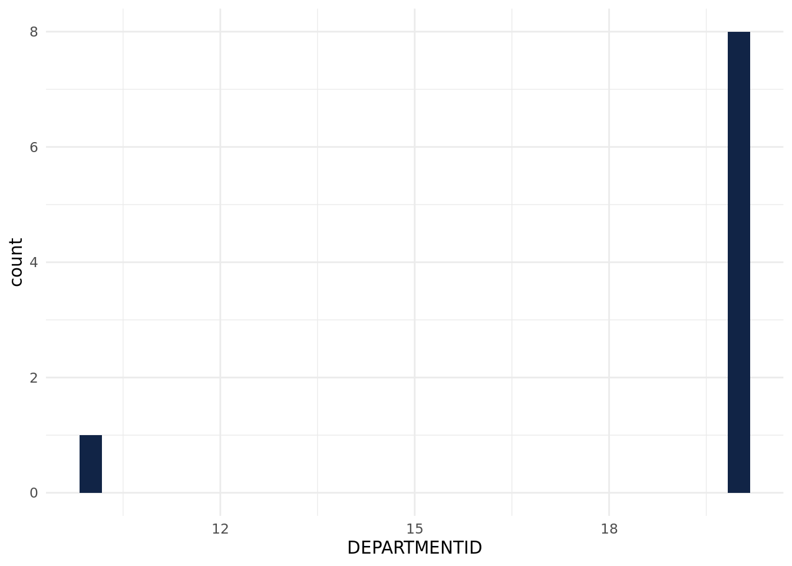

ggplot(claims_cleaned) +aes(x = DEPARTMENTID) +geom_histogram(bins =30L, fill ="#112446") +theme_minimal()

Data Visualization 2
# Reshape the data from wide to long format# Replace NA with 0 for plottingclaims_cleaned <- claims_cleaned %>%mutate(OUTSTANDING1 =ifelse(is.na(OUTSTANDING1), 0, OUTSTANDING1),OUTSTANDING2 =ifelse(is.na(OUTSTANDING2), 0, OUTSTANDING2),OUTSTANDINGP =ifelse(is.na(OUTSTANDINGP), 0, OUTSTANDINGP) )# Create a long format data frame for easier plotting with plotlyclaims_long <- claims_cleaned %>%pivot_longer(cols =starts_with("OUTSTANDING"),names_to ="Balance_Type",values_to ="Amount")# Create an interactive stacked bar plot using plotlyplot <-plot_ly(claims_long, x =~PATIENTID, y =~Amount, type ='bar', color =~Balance_Type) %>%layout(barmode ='stack',title ='Outstanding Balances by Patient ID',xaxis =list(title ='Patient ID'),yaxis =list(title ='Amount'))plot